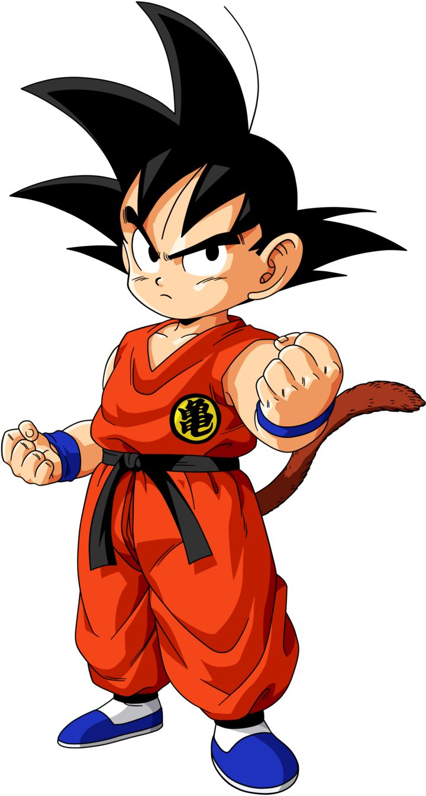
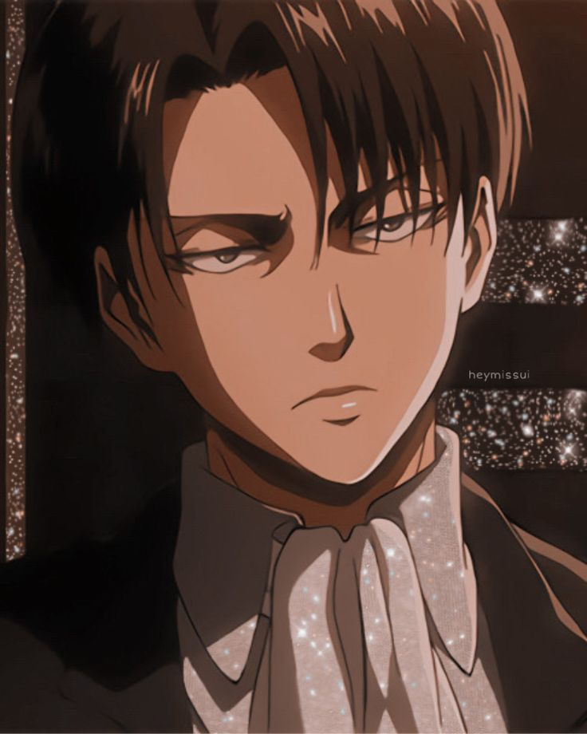

L a p l u s g r a n d e O e u v r e d ' A k i r a T o r i y a m a
Il s'agit de Dragon ball (dont c'est l'oeuvre de Akira Toriyama). Malgrés le nombre de personnage qu'Akira Toriyama a crée. L'histoire raconte d'un personnage qui s'apelle Son Goku ou plutôt Goku. Il était un jeune saiyan qui est né sur la planète Vegeta mais malheureusement, elle a été détruite par Freezer. Bardock (le père de Son Goku) a envoyer son fils sur la planète terre avant que la planète Vegeta soit détruite. Son Goku est devenu calme quand il est tomber sur la tête(blessure très grave car il a atteris sur un rocher) et il a pu vivre "paisiblement" sur Terre. Mais par contre, Son Goku a dû proteger de nombreuse fois la terre face a de puissants ennemis. Son Goku est mort seulement deux fois, la première fois il s'est sacrifier pour immobiliser son grand frère Raditz car il été beaucoup trop puissant pour Goku et Piccolo. et la deuxième fois c'est quand il s'est sacrifier face a cell en le téléportant sur la planète de Kaio Shin (alors que son fils Son Gohan avait le dessus). Son Goku avait la possibilité après un lourd entrainement de se transformer en super saiyan, quand il était transformer il été beaucoup plus puissant (exemple: si goku a une puissance de vingt-mille quand il se transforme en super saiyan qui multiplie sa puissance de cinquante, il obtien un million de puissance).
L'image de son goku ci-dessous vous enmenera sur sont site wikipedia
Il s'agit de Levi Arckeman dans attack on Titan
Levi Arckeman (sous connu du nom de Livaï)est un personnage secondaire d'Attack On Titan, il a été connu comme l'homme le plus fort de l'animé, il est nottament le plus populaire de nombreus fans l'adore et dans l'animé, c'est l'une des personnes qui a fait les plus d'interactions avec d'autres personnes. Malgré son humeur froide il est toujour sérieux et c'est un homme de confiance alors qu'il est seulement agé de trente ans. Levi n'a jamais été un titan mais par contre durant l'anime. Il perdra l'usage de son oeil droit et deux doigt de la main droite a cause d'une explosiond'une lance foudroyante.
L'image de Livaï vous enmenera sur son site specialisé pour lui
